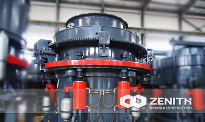
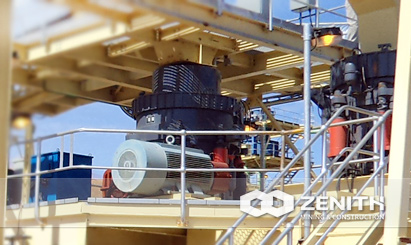
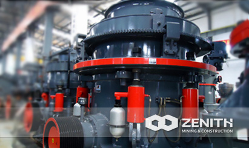
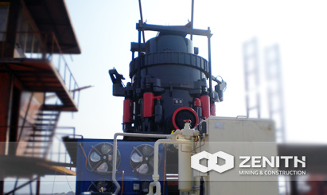

- 
- 
- 
- 
HP Cone Crusher
HP cone crusher is another powerful crushing machine produced by Zenith. As we know, in the modern mining industry, how to improve the mining efficiency has become a main concern for many mining investors. Of course, excellent open-pit mining equipment can make a significant difference to the production.
As a professional manufacturer of mining equipment, Zenith can always make a great contribution to supplying high-efficiency cone crushers for the global mining industry.
Overview of HP Cone Crusher
Zenith's HP series cone crushers belong to a kind of high-tech crusher to meet the requirements of developed countries. HP series Cone Crusher (Hydraulic) adopts computer optimization design to speed up the speed of main shaft. The unique crushing chamber replace system can quickly replace components in crushing chamber to meet different size requirement. It has a single cylinder, adopting the hydraulic pressure.
Moreover, it is designed by Zenith by the combination of the USA technology and Chinese technology. Compared with spring and traditional cone crusher, Zenith's HP series cone crushers have more advantages like easier operation, larger application scope, and more reliable performance.
HP Cone Crusher structure and Working Principle
HP cone crusher mainly consists of eccentric shaft sleeve, main shaft assembly, support sleeve assembly, moving cone assembly, and fixed cone assembly etc. The motor drives the eccentric sleeve through v-belt transmission shaft. At the same time, the moving cone wings with the force of eccentric shaft sleeve so that the crushing surface is close to the mortar from time to time. In this way, the materials will be crushed through continuous pressing, and the crushed materials will be discharged from the discharge opening.
HP cone crusher Benefits and advantages
- Thin oil lubrication makes the service time longer than before.
- Manifold crushing cavity.
- Hydraulic pressure protection and hydraulic pressure cavity clearing, higher automation and less stop production and repairing time.
- The crusher can provide customers a higher capacity, better product shape, and easy to be operated.
- The concave and mantle are made by high manganese steel. Owing to the change of the concave's style it can effectively protect the crushed products. Besides, the crusher becomes more resistant to abrasion, which extends the using life compared with the traditional cone crusher.
The tacnology data
| Model | Movable Cone Diameter (mm) | Chamber Style | Min. Discharging (mm) | Max. Feeding (mm) | Capacity (t/h) | Power (kw) | Motor Model | Machine Size (mm) |
|---|---|---|---|---|---|---|---|---|
| HPC220 | 1220 | Coarse | 19 | 210 | 185-300 | 220 | Y2-355M1-4 | 2726×1950×2182 |
| Fine | 13 | 105 | 150-210 | |||||
| HPC400 | 1570 | Coarse | 30 | 290 | 400-500 | 400 | Y3-4002-6 | 3447×2830×2977 |
| Fine | 16 | 135 | 260-400 |